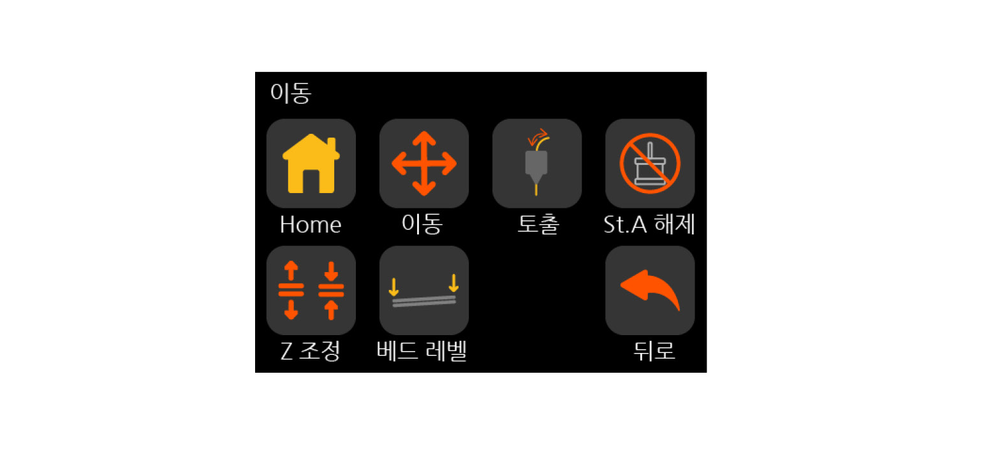

이동
{kind=link}
Home : 원점 이동에 관한 메뉴 모음.
이동 : X,Y,Z 축을 작동시킬 수 있는 기능.
토출 : E 축을 작동시킬 수 있는 기능.
St. A 해제 : 스텝 모터가 Hold 상태일 때 Hold를 해제하는 기능.
Z 조정 : Z 프로브 오프셋 조정을 인위적으로 할 수 있는 기능.
베드 레벨 : 레벨링과 관련된 세부항목을 살펴보거나 조절할 수 있는 메뉴 모음.
Home
{kind=link}
Home : 원점 이동 기능, X,Y,Z 모두 원점을 측정하고 이동하는 기능 (Auto home)
X : X축만 원점 이동하는 기능
Y : Y축만 원점 이동하는 기능
Z : Z축만 원점 이동하는 기능
※ Home전 예열을 하는 이유는, 필라멘트가 노즐 끝에 묻어 있으면 정확한 측정이 안되기 때문입니다.
이동
{kind=link}
0.1mm : 현재 정해진 단위, 버튼을 누르면 누를 때마다 0.01mm, 0.1mm, 1mm, 10mm, 100mm로 변경된다.
X+,X-,Y+,Y-,Z+,Z- : 현재의 단위만큼 각 축을 이동시킨다.
토출
{kind=link}
제거, 삽입 : 필라멘트를 제거, 삽입하는 방향으로 정해진 길이만큼 익스트루더 모터를 움직이는 기능.
온도 : 온도를 조절할 수 있는 기능.
5mm : 단위를 변경할 수 있는 버튼, 누를 때마다 1,5,10,100,200mm 로 변경됨.
보통 : 압출 해내는 속도를 변경할 수 있는 버튼, 누를 때 마다 속도가 변경됨.
Z 조정
{kind=link}
감소, 증가 : 프로브 오프셋의 값을 변경하는 버튼.
저장 : 변경된 값을 저장하는 버튼.
0.01mm : 감소 증가의 길이 단위를 변경하는 버튼.
리셋 : 초기값으로 변경하는 버튼.
베드 레벨
{kind=link}
ABL : 오토베드 레벨링을 시작하는 메뉴 모음.
Mesh 수정 : 오토레벨링으로 얻은 각 부분의 Z 값들을 직접 수정하는 과정.
BL : ON : 베드레벨링이 On되어 있는 상태, 한 번 더 누르게 되면 Off가 됨.
Z Fade : 오토레벨링의 보정을 끝내는 높이를 정하는 메뉴.
P 오프셋 : 프로브 오프셋을 조절하는 메뉴.